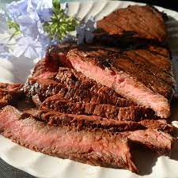

Favorite recipes

This crockpot Buffalo chicken is great for hearty sandwiches that will please those who love Buffalo chicken wings. This recipe is perfect for those days spent watching football. I like to top these with blue cheese or ranch dressing.
Recipe for Buffalo Chicken Sandwiches

This sirloin steak recipe is served with very garlicky butter that makes this steak melt-in-your-mouth wonderful! I have never tasted any other steak that came even close to this recipe. If you are having steak, don't skimp on flavor to save a few calories.
Recipe for Sirloin Steak